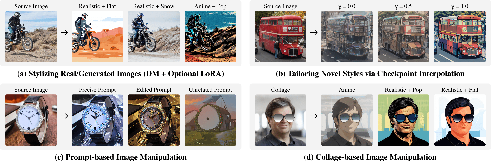

Diffusion Cocktailüç∏: Mixing Domain-Specific Diffusion Models for Diversified Image Generations

Diffusion models, capable of high-quality image generation, receive unparalleled popularity for their ease of extension. Active users have created a massive collection of domain-specific diffusion models by fine-tuning base models on self-collected datasets. Recent work has focused on improving a single diffusion model by uncovering semantic and visual information encoded in various architecture components. However, those methods overlook the vastly available set of fine-tuned diffusion models and, therefore, miss the opportunity to utilize their combined capacity for novel generation. In this work, we propose Diffusion Cocktail (Ditail), a training-free method that transfers style and content information between multiple diffusion models. This allows us to perform diversified generations using a set of diffusion models, resulting in novel images unobtainable by a single model. Ditail also offers fine-grained control of the generation process, which enables flexible manipulations of styles and contents. With these properties, Ditail excels in numerous applications, including style transfer guided by diffusion models, novel-style image generation, and image manipulation via prompts or collage inputs.
TL;DR: Ditail offers a training-free method for fine-grained manipulations of image content/style via the vastly available domain-specific Diffusion models and LoRAs checkpoints, enabling diversified novel image generations.
Diffusion models (DMs) have shown great success in generating high-quality images, conditioning on various input types (e.g., text, reference image, etc.). Even though many recent works have focused on improving a single DM on generation controllability and interpretability of model components, rarely have people studied combinations of diffusion models, ignoring the vast collection of DMs created by everyday users. To the best of our knowledge, we are the first to study image generation using multiple DMs and the transfer of information in between. We propose Diffusion Cocktail (Ditail), a simple yet effective method that is readily applicable to existing DMs without further training/fine-tuning, thus allowing us to utilize the abundant and fast-growing DM resources efficiently and effectively.
Ditail enables us to transform the source image (that is not necessarily generated by a DM) to some target domains, using domain-specific DM checkpoints as proxies. In other words, we explore a novel model-centric style transfer paradigm, where the target style is set according to a generative model, as opposed to a target style image in the conventional style transfer setting. (a) Ditail adopts a two-stage approach to produce the target image. We first invert the source image into noisy latents via DDIM, conditioning on a scaled interpolation of the prompt text embeddings (i.e., positive and negative prompts). Then, we perform denoising with the target DM while injecting the feature and self-attention maps (reconstructed from the source latents) into certain U-Net layers. (b) Ditail can be naturally extended to transform collages to some target domain. (c) Ditail allows tailoring novel target styles by merging existing style DMs via checkpoint interpolation.

Given m images generated by m DMs independently with the same textual prompt, one can identify images with desirable contents and styles, and apply Ditail to mix the content and styles for more satisfying results. Ditail can, in principle, generate O(m2) novel images that are not obtainable using a single model from the existing m DMs, significantly increasing the generation flexibility and diversity. The figure below demonstrates the cross-transfer over 3 DM checkpoints.


Ditail offers diverse controls over the fused generation process, including content manipulation (positive and negative prompts), structure preservation (scaling factors and content injection), style (DMs and LoRAs), and granularity (sampling steps and CFG factor). Moreover, Ditail is applicable to thousands of DMs and LoRAs available online, thereby enabling the vast community to generate any content of any style. With an Nvidia A10G-small GPU (i.e., our demo on HuggingFace), processing a single image takes ~20 seconds for 50 sampling steps using 16-bit floating point precision. Please refer to our paper and code for more technical details.
Acknowledgements: This work is supported in part by the Shanghai Frontiers Science Center of Artificial Intelligence and Deep Learning at NYU Shanghai, NYU Shanghai Boost Fund, and NYU High Performance Computing resources and services. We use the following Diffusion model checkpoints: BluePastel, Chaos3.0, DiaMix, Little Illustration, Realistic Vision, Stable Diffusion 1.5. The presented source images are drawn from COCO Captions, LAION-5B, and GEMRec-18K. The project page is adapted from DreamBooth.